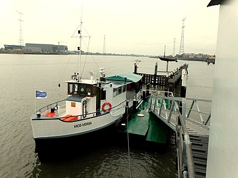
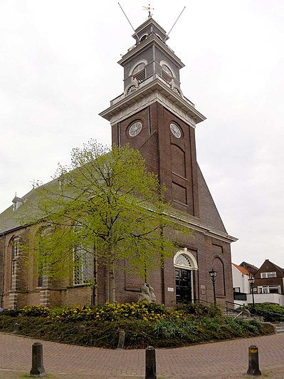

- Giftschandaal
- De Bakkerswaal
- Bijnaam
- Bekende (oud)-inwoners
- Kerken
Weetjes:
De twee voetveren, één op Nieuw-Lekkerland en één op Streefkerk werden al in 1849 genoemd, de dienst op Streefkerk is vervallen omdat er al een veer was tussen Bergstoep en Streefkerk. Reederij op de Lek onderhield tussen 1857 en 1973 de bootdienst op de Lek tussen Rotterdam en Schoonhoven, Lekkerkerk was een van de haltes
De oorspronkelijke middeleeuwse kerk van Lekkerkerk werd in 1512 door Gelderse troepen verwoest. De kerk werd hierna herbouwd en betrof een kruiskerk met een driezijdige koorsluiting. In 1575 of 1576 (tijdens de Tachtigjarige Oorlog) werd deze kerk door een van de strijdende partijen in brand gestoken en deels verwoest. De herbouwde kerk kwam gereed in 1615. Dit betrof een kerk zonder koor en transeptarmen, waarmee in feite een zaalkerk ontstond. De kerk heeft een schip van zes traveeën lang. Nadat de toren op 28 augustus 1779 was ingestort werd de gehele westelijke (voor)gevel vernieuwd volgens een ontwerp van G. van der Linden uit Den Haag. Deze herbouw staat vermeld op een ingemetselde steen boven de westelijke ingang. Diverse malen is de vloer van de kerk opgehoogd, namelijk in 1722, 1780, 1816 en 1871. Het interieur van de kerk is in 1954 vernieuwd door binnenhuisarchitect H.G. Reitsma. Van 1980 tot en met 1982 is de kerk gerestaureerd en zijn de vernieuwingen uit 1954 ongedaan gemaakt. Op 3 januari 2018 is een omgevingsvergunning voor de uitbreiding van de kerk aan de oostzijde met een uit metselwerk opgetrokken cilindrische aanbouw en transparant tussenlid tussen de aanbouw en de kerk verstrekt. In augustus 2018 is deze vergunning door de rechter geblokkeerd.